Guatemala City / Guatemala
ARWYNG
El Lobo
DJ / Producer
Tech House, Techno, Reggaeton, Pop & Hip Hop en una experiencia única para cada escenario.
Erwing Daniel Mendez Carias
Acerca de mí
Erwing Daniel Mendez Carias, conocido como DJ ARWYNG o "El Lobo", es un artista guatemalteco que ha dejado huella dentro de la escena musical nacional. Desde el año 2016 ha explorado distintos géneros y escenarios, creando sets versátiles, dinámicos y llenos de energía. Su estilo combina la fuerza de la música electrónica con ritmos urbanos y latinos, logrando conectar con públicos diferentes en cada presentación.
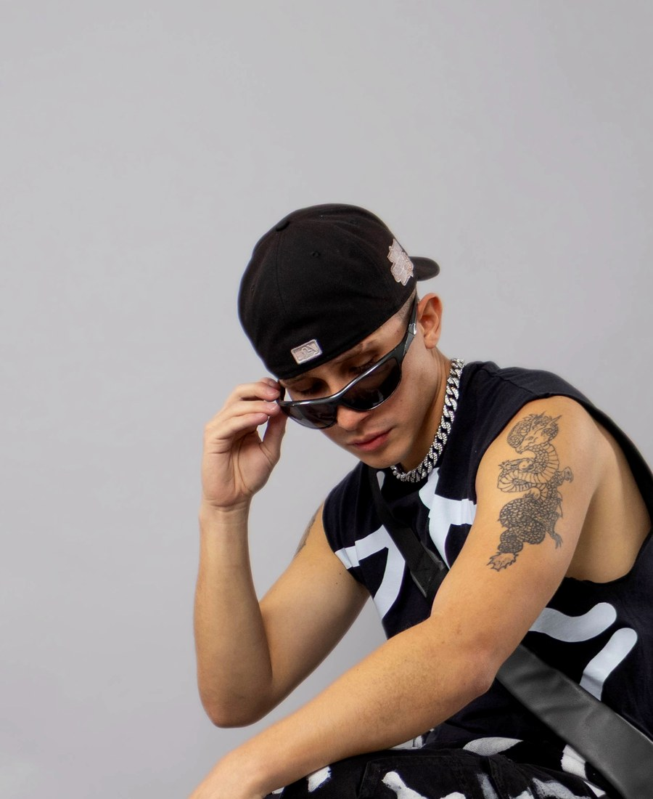
Estilo musical
El sonido de ARWYNG
La versatilidad es una de las características principales de ARWYNG. Su habilidad para fusionar diferentes géneros le permite crear sets únicos que mantienen a la audiencia en movimiento durante toda la noche.
Techno
Reggaeton
Pop
Hip Hop
ARWYNG LIVE
Sesión en vivo
Disfruta una sesión especial de ARWYNG y vive la energía de su sonido en vivo.
Sesión oficial
Ver presentación en YouTube
Escenarios y colaboraciones
Eventos
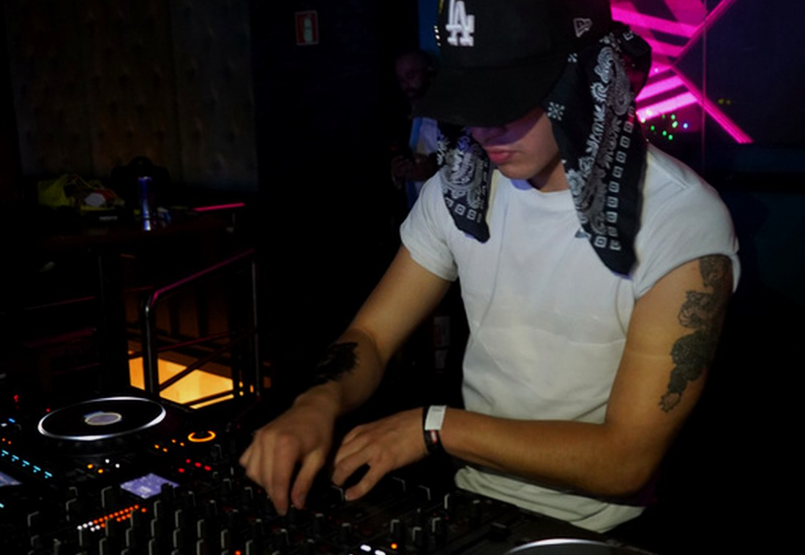
Zoho
Presentación en uno de los espacios donde ARWYNG llevó su propuesta musical con una mezcla de energía electrónica y ritmos urbanos.
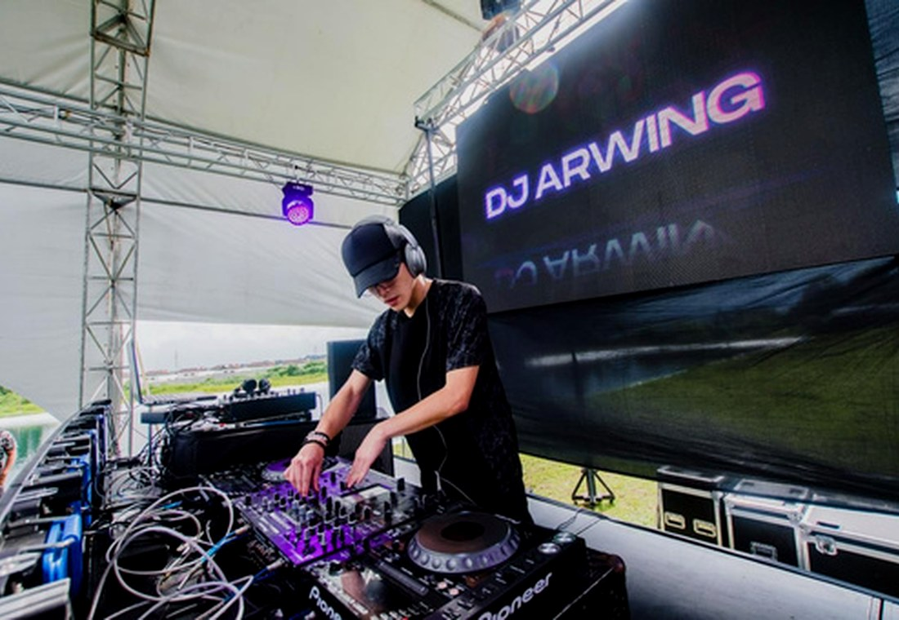
Summer Fest
Participación en Summer Fest, compartiendo escenario y colaboraciones con Ghetto Living y DJFreddieb.
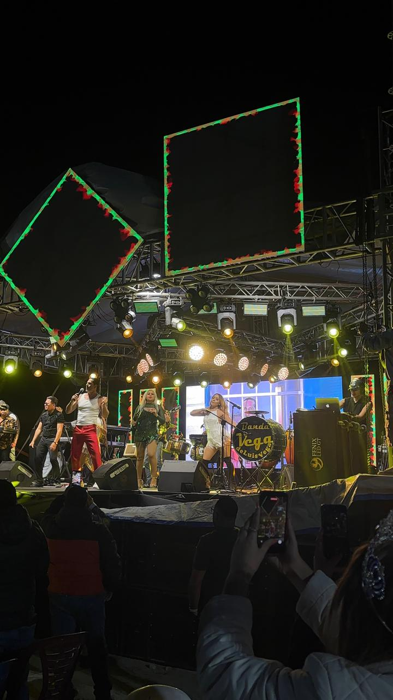
Concierto con Gregorio Pernía "El Titi"
Presentación realizada en Municipalidad de Villa Canales, formando parte de un evento de alto impacto para el público guatemalteco.
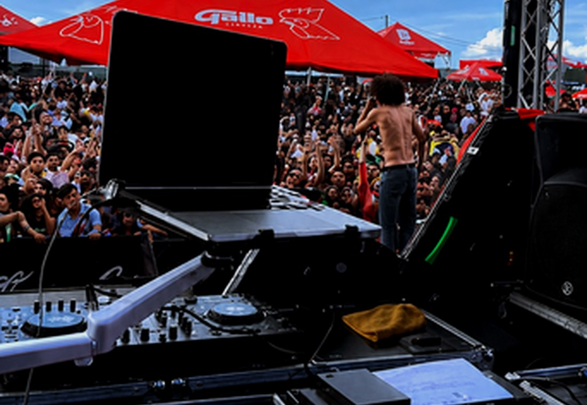
Concierto de Eladio Carrión
Colaboración junto al artista Kontra Marin en un evento vinculado a la escena urbana internacional.
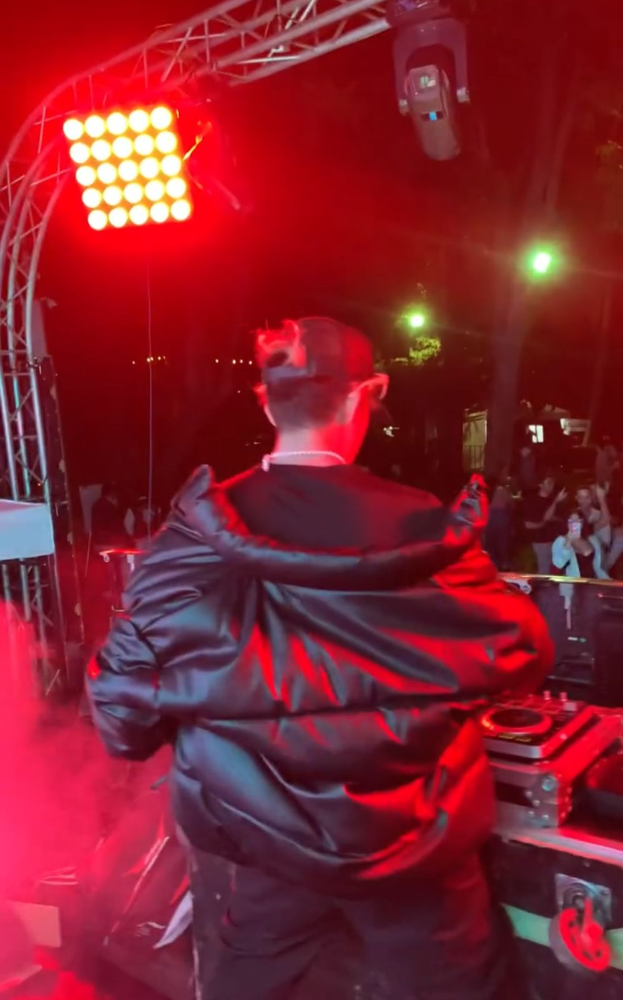
The 5Sense Concert
Colaboración con Ritmodelia en una experiencia musical enfocada en conectar ritmo, energía y ambiente.
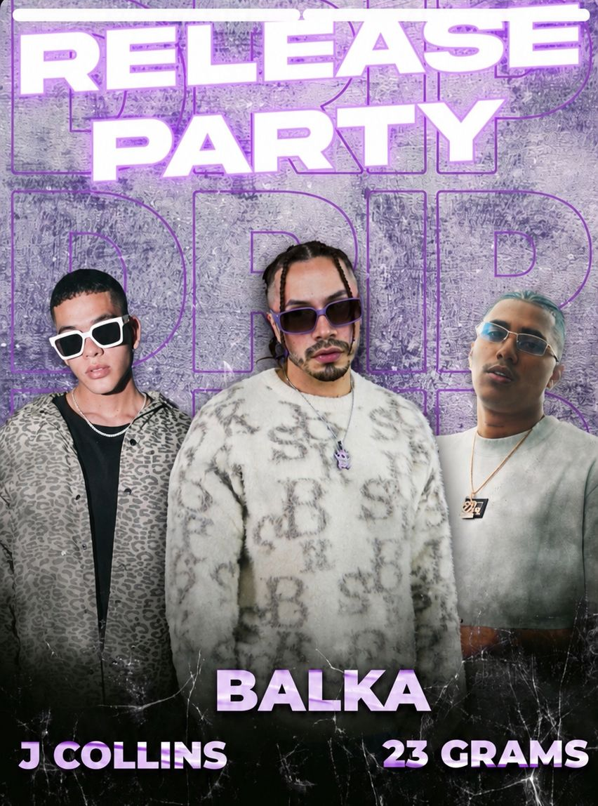
Release Party
Participación en release parties junto a Balka, J Collins, Yessie y Eix en Blue Lounge Zona 9.
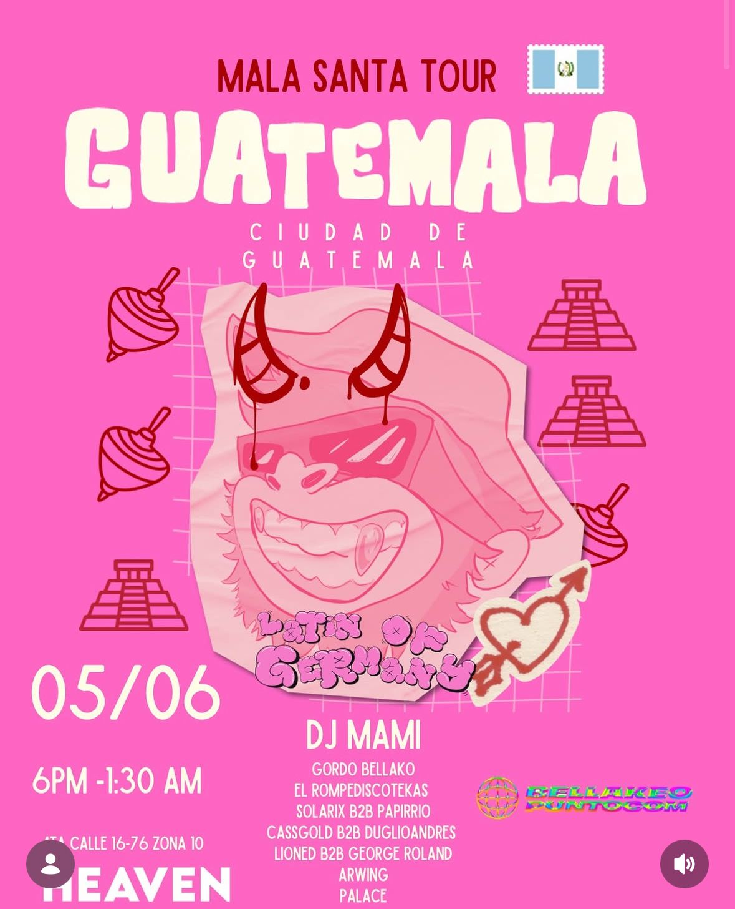
Bellakeo.com / Mala Santa Tour
Participación junto a DJ Mami en un evento de alta energía enfocado en música urbana y fiesta nocturna.
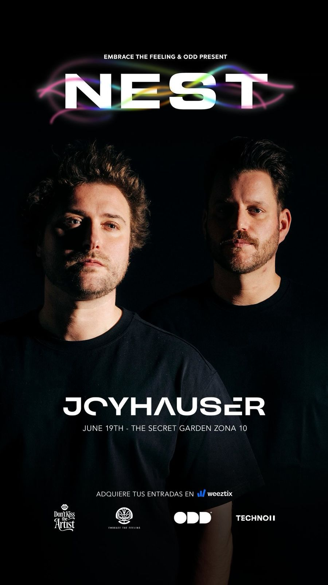
Embrace The Feeling
Colaboración con Joy Hauser en una presentación con enfoque electrónico y experiencia sensorial.
Escenarios destacados
Zoho
12 Bar
S1
The Secret Garden
Vento Sky Lounge
Los 40 Radio
Teletón
Blue Lounge Zona 9
Municipalidad Antigua
ASA Fest
The Box Lounge
Antigua Brewing
Jardín Grandiosa
Festival Antigua
Trayectoria compartida
Collabs
Colaboraciones y presentaciones que forman parte de la trayectoria de ARWYNG.
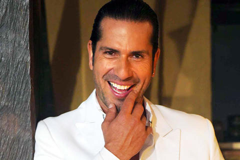
Gregorio Pernía "El Titi"
Presentación realizada en Municipalidad de Villa Canales, formando parte de un evento de alto impacto para el público guatemalteco.
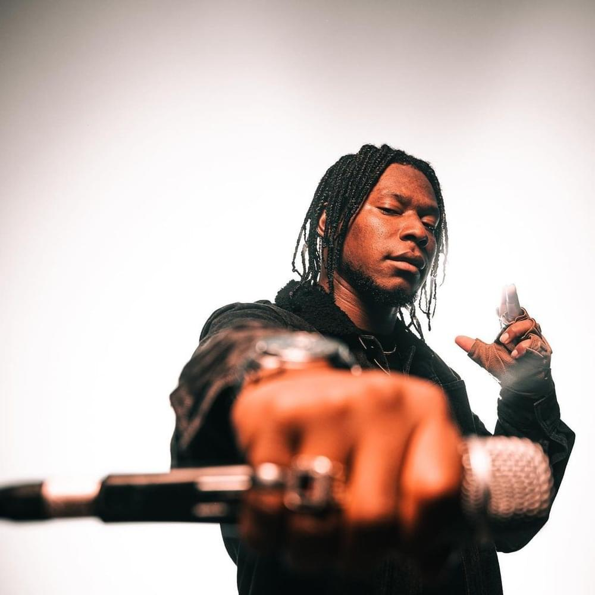
Ghetto Living & DJFreddieb
Colaboración durante Summer Fest 2021, mezclando energía electrónica con una propuesta urbana para el escenario.
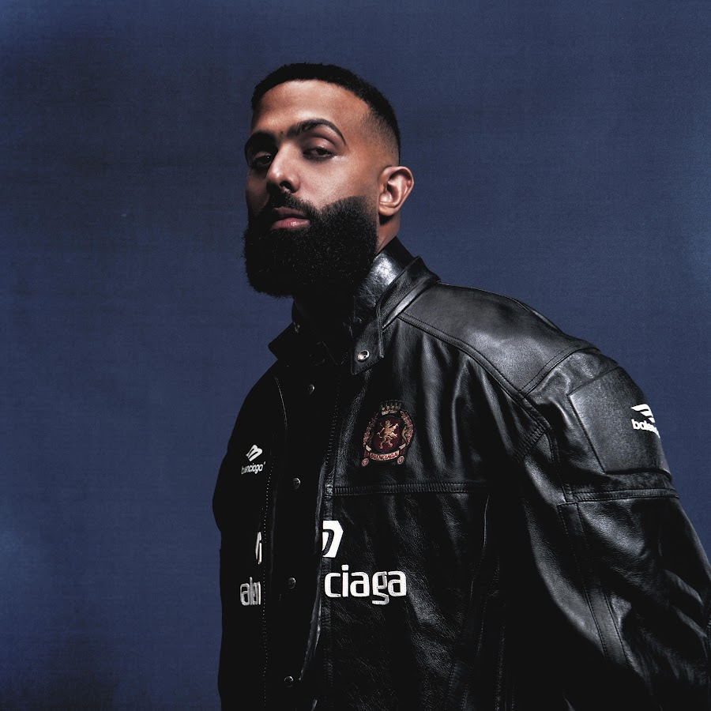
Eladio Carrión / Kontra Marin
Participación vinculada al concierto de Eladio Carrión, en colaboración con el artista Kontra Marin.

Ritmodelia
Colaboración en The 5Sense Concert, una experiencia musical enfocada en ritmo, energía y conexión con el público.
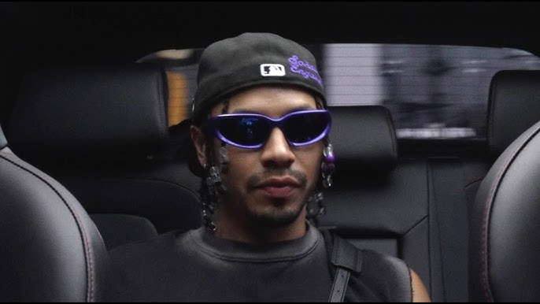
Balka & J Collins
Participación en release party, formando parte de eventos enfocados en la escena musical y nocturna.
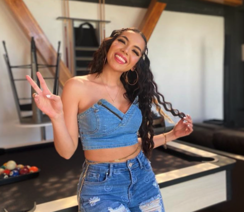
Yessie & Eix
Release party realizada en Blue Lounge Zona 9, con una propuesta musical llena de energía urbana y electrónica.
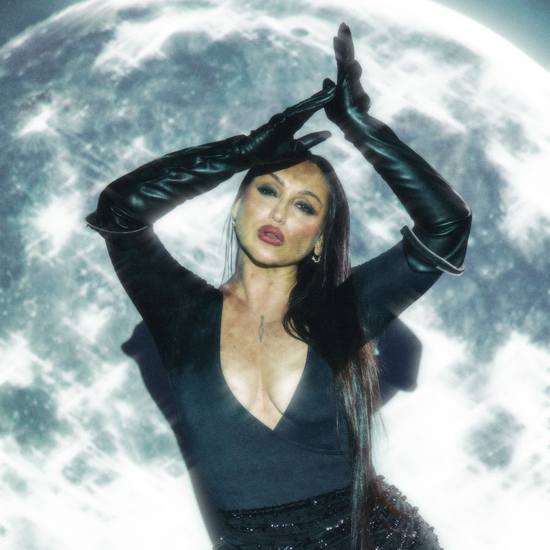
DJ Mami
Participación en Bellakeo.com / Mala Santa Tour, evento enfocado en música urbana y ambiente de fiesta.

Joy Hauser
Colaboración en Embrace The Feeling, una presentación con enfoque electrónico y experiencia sensorial.
Press photos
Galería
{kind=link}
{kind=link}
{kind=link}
{kind=link}
{kind=link}
{kind=link}
Booking
Contrata a ARWYNG
Disponible para discotecas, festivales, eventos privados, conciertos, fiestas corporativas, bares y experiencias musicales personalizadas.